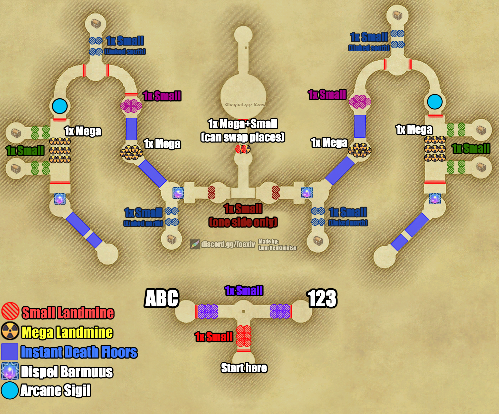

Traversal
Lower Passages
The hallway section between Two-headed Aevis and Sword Dancer. Also referred to as “Bridgeways.”
Overview
After defeating the Two-headed Aevis, the raid splits into two groups: letter parties (A, B, C) take the left passage, and number parties (1, 2, 3) take the right passage. Both sides navigate mirrored layouts filled with hidden landmines, lasers, and Arcane Sigil sacrifice puzzles before converging at the Sword Dancer arena.
All colored trap sets appear symmetrically on both the left and right sides. Only one trap per colored group will be live, while the other spots remain empty.

Explosive Traps & Hazards
Small Landmine: Detonates with a lethal AoE affecting the trigger and nearby players. The Phantom Ranger disarms these using Occult Falcon.
Mega Landmine: Explodes with a massive radius that may cause a full wipe. The Phantom Ranger must disarm at maximum range with everyone positioned far behind.
Lasers: The blue glowing laser barriers across the hallways are lethal. Stepping into them causes immediate death. Navigate around them carefully.
Never disarm a trap without the raid leader's permission. Confirm the trap type and ensure the entire party is safe first.
- Trap Distribution:
- Initial Hallway: 1x Small Landmine in the starting corridor (red set or blue set).
- Passageways: 1x Small (linked south / linked north), 1x Mega in the inner corridors, and 1x Small in the outer loops.
- Rejoining Corridor: The final trap set before rejoining (1x Small) can appear on either the left or the right side.
- Final Room: 1x Mega and 1x Small Landmine (these two can swap positions).
Mechanics & Progression
- Arcane Sigils (Sacrifice Puzzles):
- Each side features a glowing cyan Arcane Sigil.
- Tanks must pull enemies directly onto the sigil. Kill 4 of any add on top of the Arcane Sigil to solve the puzzle and break the barrier.
- Dispel Barmuus:
- When the Tower Barmuus appears, a Phantom Time Mage must immediately cast Occult Dispel to strip its lethal buff.
- Hidden Chests & Tower Crusaders:
- Phantom Thieves can use Trap Detection to uncover hidden chests in the side chambers.
- Tower Crusader Spawn: All hidden chest spots have a chance to spawn an aggressive Tower Crusader add instead of a chest when percepted. Be prepared to pick it up and burn it down immediately.
Phantom Job Responsibilities
Thief
- Use Trap Detection to reveal hidden landmines and side chests. Move ahead carefully with the raid leader's call.
- Alert the party when percepting hidden chest locations, as a Tower Crusader may spawn.
Ranger
- When instructed, use Occult Falcon to disarm traps.
- When disarming a Mega Landmine, stand at maximum range and ensure the party is completely clear behind you.
Time Mage
- Use Occult Slowga on trash packs to slow down their casts and attacks.
- Cast Occult Dispel immediately on the Tower Barmuus.
Samurai
- Use Iainuki on enemy packs for a chance to instantly kill enemies.
Black Mage
- Use Occult Toad to transform enemies into frogs, rendering them near harmless and reducing their damage dealt by 99%.